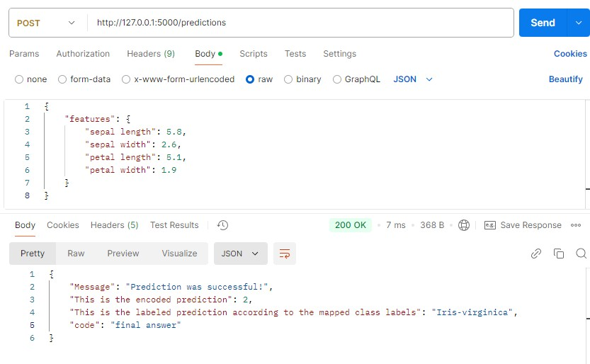

Project 2: Interactive Machine Learning Predictions with LLM Integration
ML Model Usage
The second phase focuses on setting up the ML usage layer to process data and generate predictions. The key tasks in this phase include:
- Providing an API which can receive a JSON body.
- Applying validation checks to ensure the JSON has the format required by the model (returning detailed error messages if not).
- Loading the saved model, encoders, class mappings and other necessary files.
- Checking if the data input aligns with the model's input definition (returning errors if mismatched).
- Preprocessing the input data and passing it through the model to generate predictions.
- Utilizing stored class mappings to provide results in an interpretable format.
- Returning predictions to the orchestrator, including a code value required for the process.
The Model Use Layer provides a reliable API endpoint using Flask. The API accepts JSON format and includes input checks to ensure the JSON matches the expected structure. Errors are returned in a structured format to allow integration with the orchestrator layer as well as the LLM.

from flask import Flask, request, jsonify
import pandas as pd
from sklearn.preprocessing import LabelEncoder
import joblib
import json
import os
#set all default file paths
default_model_path = "model/dt_trained_model.pkl"
default_label_encoders_path = "model/dt_label_encoders.pkl"
default_class_labels_path = "model/dt_class_labels.pkl"
default_feature_template_path = "model/feature_template.json"
app = Flask(__name__)
#load the model, label encoders, and class label mapping
def load_model_files():
try:
model = joblib.load(default_model_path)
label_encoders = joblib.load(default_label_encoders_path)
class_label_mapping = joblib.load(default_class_labels_path)
with open(default_feature_template_path, 'r') as f:
feature_template = json.load(f)
except Exception as e:
raise FileNotFoundError(f"Error loading model or related files: {e}")
return model, label_encoders, class_label_mapping, feature_template
#function to run the prediction
def prediction_run(features):
try:
#load model and encoders
model, label_encoders, class_label_mapping, feature_template = load_model_files()
#align feature names with the template
aligned_features = {key: features.get(key, None) for key in feature_template['features']}
#check for missing values in aligned features
missing_features = [key for key, value in aligned_features.items() if value is None]
if missing_features:
raise ValueError(f"Missing values for features: {missing_features}")
#prepare data for prediction
input_features = pd.DataFrame([aligned_features])
#apply label encoding if necessary
for col, encoder in label_encoders.items():
if col in input_features.columns:
try:
input_features[col] = encoder.transform(input_features[col].astype(str))
except Exception as e:
raise ValueError(f"Error encoding column '{col}': {str(e)}")
#make the actual prediction with the model
encoded_prediction = model.predict(input_features)[0]
#retrieve label prediction
label_prediction = next((key for key, value in class_label_mapping.items() if value == encoded_prediction), f"Unknown class label for encoded value: {encoded_prediction}")
return int(encoded_prediction), label_prediction
except FileNotFoundError as fnfe:
raise FileNotFoundError(f"Model or related files not found: {str(fnfe)}")
except ValueError as ve:
raise ValueError(f"Prediction error: {str(ve)}")
except Exception as e:
raise Exception(f"Unexpected error in prediction: {str(e)}")
#API
@app.route('/predictions', methods=['POST'])
def predict():
try:
#load feature template to crosscheck json input against
with open(default_feature_template_path, 'r') as f:
expected_template = json.load(f)
#attempt to get JSON input
json_input = request.get_json()
#check if JSON is empty
if not json_input:
return jsonify({"error": "JSON Empty"}), 400
#validate the features key and its structure
if 'features' not in json_input or not isinstance(json_input['features'], dict):
return jsonify({
"code": "pending",
"error": "The request body must include a key named 'features', and its value must be a dictionary. Please refer to the expected body.",
"expected_body": expected_template
}), 400
#check if all required feature keys are present
required_keys = expected_template['features']
if not all(key in json_input['features'] for key in required_keys):
return jsonify({
"code": "pending",
"error": "The 'features' dictionary is missing required keys. Please ensure all necessary keys are included as shown in the expected body.",
"expected_body": expected_template
}), 400
#call prediction function to run predictions
encoded_prediction, label_prediction = prediction_run(json_input['features'])
#return predictions
return jsonify({
"Message": "Prediction was successful!",
"code": "final answer",
"This is the encoded prediction": encoded_prediction,
"This is the labeled prediction according to the mapped class labels": label_prediction
}), 200
#handle exceptions
except Exception as e:
return jsonify({
"code": "pending",
"error": f"Error processing request. Body needs to be updated. Error was: {str(e)}",
"expected_body": expected_template
}), 500
if __name__ == '__main__':
app.run(debug=True)